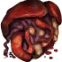

Кишки нежити
Предметы / С заданий
Открыть в интерактивной вики →
| Вес | 20 |
|---|---|
| Цена | 0 |
Описание
Кишки нежити, благодаря которым вы призовете  Наблюдатель. Сложите все собранные останки в центре поселения.
Наблюдатель. Сложите все собранные останки в центре поселения.
Наблюдатель. Сложите все собранные останки в центре поселения.| Потроха нежити — с их помощью призовёшь Наблюдателя. Сложи все собранные останки в центре поселения. |
Дроп

Применение
|
Как добыть
Получаем за победу над:
|